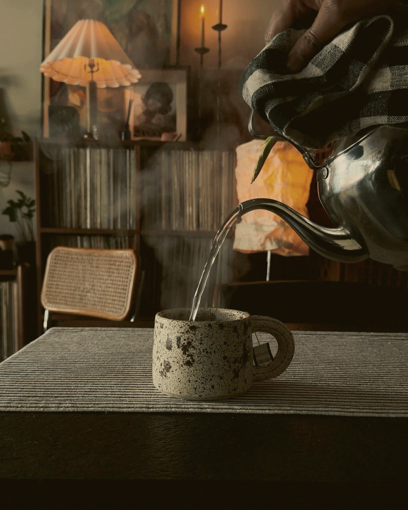
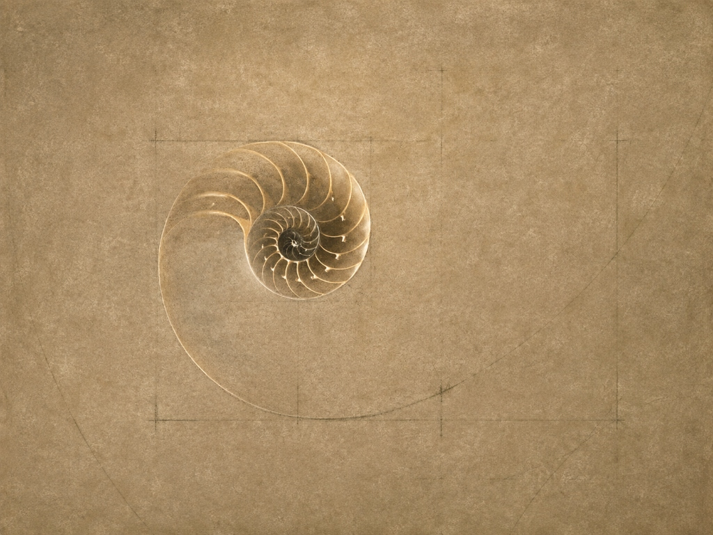

How to Plan
Your Rhythm & Focus Areas
What to Lovingly Step Away From
Use each lunar rhythm to plant the seeds of who you're becoming, connect the dots in your everyday life, celebrate how far you've come, and rest without a drop of guilt.
Personal Narrative
"What do you long for that switches you on, turns you up and makes you a little uncomfortable all at the same time?"

"Open a blank page and write down the one thing you most want to welcome into your life."

Instruction text...
"Transmission quote..."
Wisdom excerpt text...